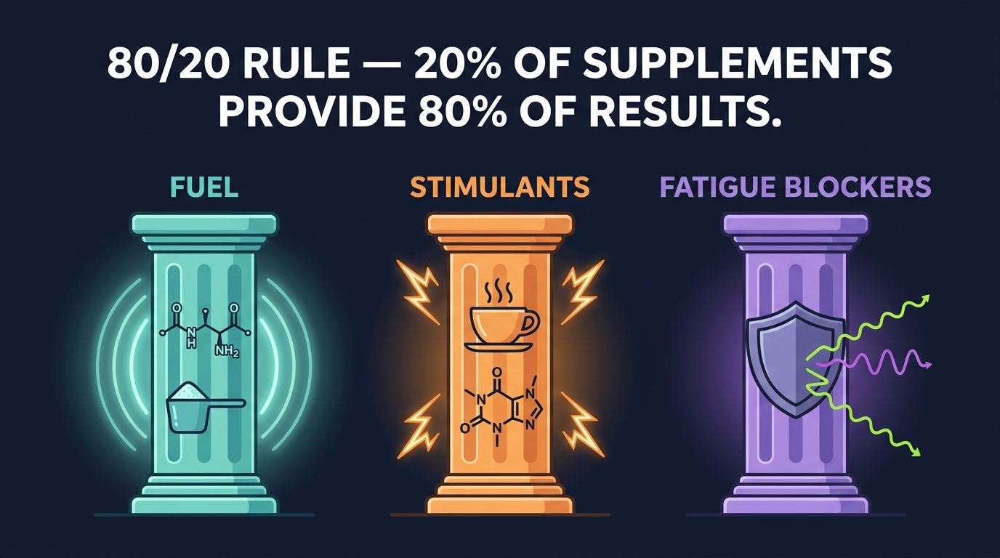
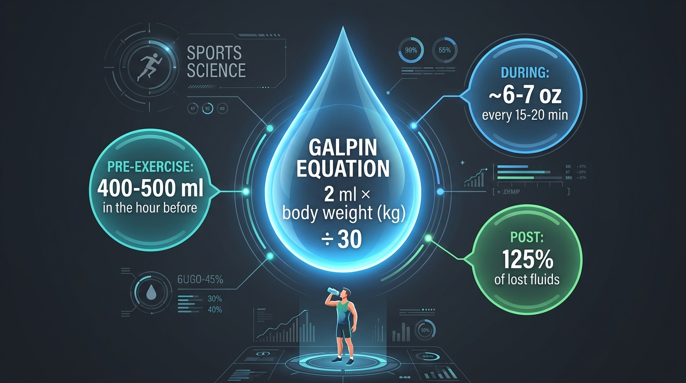
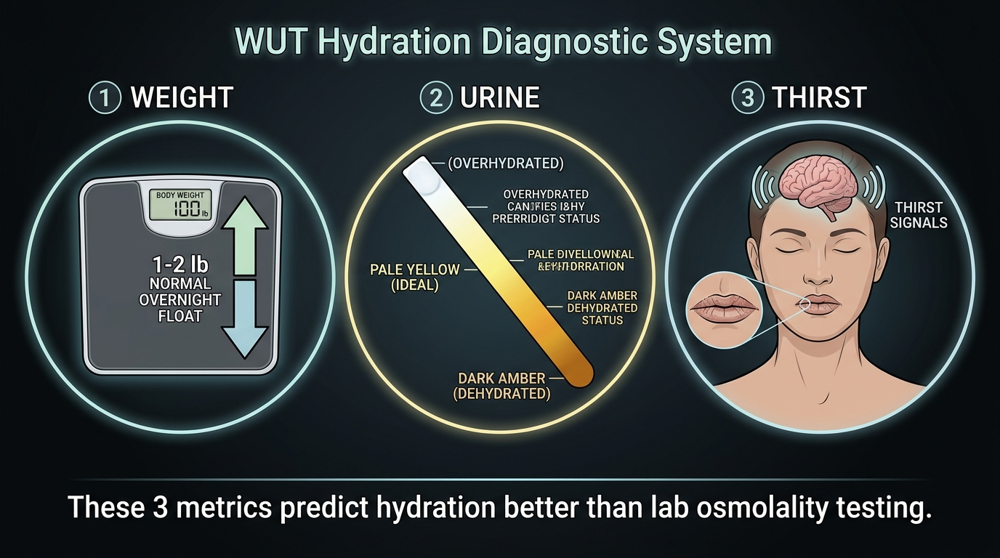
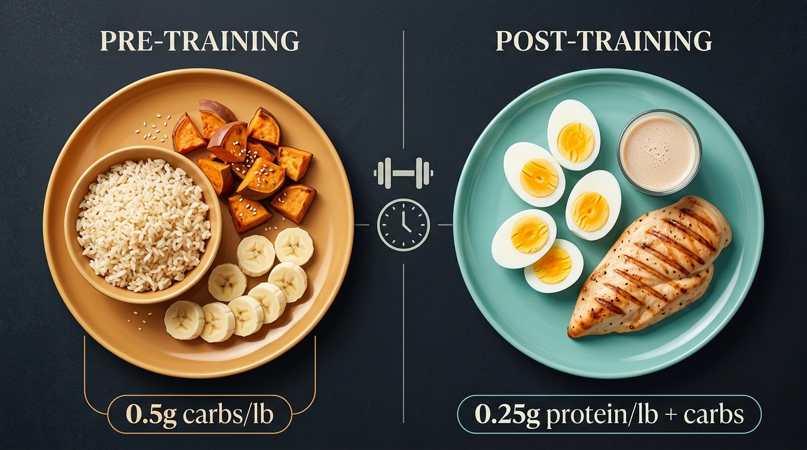

The 80/20 rule: most supplements are noise

Galpin's approach: only supplement what you specifically need, verified through testing when possible. The vast majority of benefits come from three categories:
"Supplements are not just supplementing deficient diets. They're potent compounds that can transform performance, recovery, and brain chemistry." — Dr. Andy Galpin
Creatine: the single best ROI in supplementation
Creatine isn't just for bodybuilders. It fuels the phosphocreatine energy system (instant power for 8-10 seconds), supports cognitive function, and helps with cell hydration. It's one of the most researched supplements in existence.
| Parameter | Recommendation |
|---|---|
| Daily dose | 3-7 grams/day — no loading required |
| Optional loading | 20g/day split into 4 × 5g doses for faster saturation |
| Time to saturate | 3-4 weeks (chronic, not acute like caffeine) |
| Benefits | Muscle size/strength, cognitive function, cell hydration, sleep deprivation mitigation |
| Best paired with | Carbohydrates (insulin/glucose enhances absorption) |
| Side effects | Potential GI distress at very high doses (30g+); otherwise well-tolerated |
Hydration: the most underrated performance variable

Even 2% dehydration impairs accuracy, endurance, speed, power, and mental performance. At 3-5%, blood volume drops, viscosity increases, and endurance collapses. Most people train chronically under-hydrated.
Evening tip: sip water in the 3 hours before sleep — don't gulp large amounts. Large drinks dilute blood rapidly, triggering immediate urination and disrupting sleep.
The WUT system: better than lab testing

Three simple metrics that predict hydration status better than osmolality testing:
Weight
Weigh yourself before bed and upon waking. Normal overnight float = 1-2 lbs for a 170+ lb person. Larger drops suggest dehydration or excessive sweating.
Urine
Clear + small amounts = overhydrated. Dark + large volumes = dehydrated. Dark + small amounts = possible sleep apnea/vasopressin issue (not hydration). Pale yellow + normal volume = ideal.
Thirst
If you're thirsty, you're already behind. Salt cravings are hardwired — craving salt likely means you're deficient. Athletes on clean diets + caffeine + training need 3-4x more sodium than the general population.
Night urination rule: waking 1-2 times per night = acceptable. More than 2 = investigate. If you have dry mouth + large urinations, it's likely a breathing issue (mouth breathing during sleep), not dehydration.
Sodium is probably your biggest gap
If you eat clean (no processed foods), drink caffeine, and train regularly, you're almost certainly sodium-deficient. This trifecta depletes sodium stores that processed-food eaters replenish passively.
Coconut water hack: ~200mg sodium + ~600mg potassium. Add a pinch of salt to balance the sodium:potassium ratio. Cheap, natural, effective.
Macronutrient numbers for training days

Total daily intake matters more than timing — with one exception: carbohydrate timing becomes critical when sessions significantly deplete glycogen or when training multiple times per day.
| Training Type | Carbs | Protein | Ratio |
|---|---|---|---|
| High-effort (hypertrophy, endurance) | 0.5g/lb body weight | 0.25g/lb body weight | 2:1 carb:protein |
| Lower-energy (easy sessions) | 50-75g | 50-75g | 1:1 carb:protein |
| High-intensity + heat/fluid loss | 150-200g | 40-50g | 3:1 to 4:1 carb:protein |
| 30-sec sprint / single bout | No special fueling needed | ||
The "anabolic window" myth: total daily protein intake matters far more than consuming protein within 30 minutes of training. However, carbohydrate timing IS important for glycogen resynthesis — especially when training twice per day.
Caffeine: the most effective legal performance enhancer
Dosage: 1-3 mg per kg body weight
For a 220 lb (100 kg) person = 100-300 mg. Onset in 30-45 minutes. Half-life of 4-6 hours (manage for sleep). Above 5 mg/kg = performance decrements. Even habitual users show ergogenic benefit despite diminished subjective feeling.
Best for endurance, mixed for strength
Strong documented benefit for endurance activities, reaction time, and power output. Weaker/mixed effects on pure 1-rep max strength. Mechanism: competitively binds adenosine receptors, blocking fatigue signals.
Coffee caffeine is wildly inconsistent
A single cup of coffee contains 250-500 mg (varies by brew, roast, vendor). Standard lookup tables underestimate by 2-3x. For precise dosing: use caffeine tablets (100-200 mg). For evening training without sleep disruption: try L-citrulline instead.
6 Things to Remember
Hydration is the most underrated performance lever
2% dehydration degrades everything. Use the Galpin Equation during training (body weight kg × 2 ÷ 30 = ml every 15-20 min). Drink 125% of lost fluids after.
Creatine is the single best supplement investment
3-7g/day. No loading needed. Benefits muscle, brain, and cell hydration. Takes 3-4 weeks to saturate — it's a chronic tool, not an acute one. Pair with carbs.
You're probably sodium-deficient
Clean diet + caffeine + training = sodium depletion. Salt cravings are real signals. Add 200-400mg sodium to workout drinks. Athletes need 3-4x more than sedentary people.
Total daily macros > timing (with one exception)
The anabolic window for protein is largely a myth. But carb timing matters for glycogen resynthesis, especially when training twice per day. High-effort days: 0.5g carbs + 0.25g protein per lb body weight.
Use WUT, not lab tests, for hydration
Weight (overnight float), Urine (color + volume), Thirst. These three metrics predict hydration better than osmolality testing. Dark urine + small volume = possible sleep issue, not dehydration.
Caffeine: 1-3 mg/kg, not more
Above 5 mg/kg = performance drops. Coffee caffeine is wildly inconsistent (250-500mg per cup). Use tablets for precision. Even regular users still get ergogenic benefit.
Watch the Full Episode
- Complete creatine deep dive — loading protocols, cognitive benefits, cell hydration mechanics, and why it's the highest-ROI supplement
- The Galpin Equation & hydration science — complete formula derivation, sweat rate data, dehydration performance effects, and NFL case studies
- Night urination diagnostics — how to distinguish dehydration from sleep apnea from mouth breathing, using urine color + volume patterns
- Electrolyte deep dive & sodium deficiency — why clean-eating athletes need 3-4x more sodium, coconut water hack, and osmolality matching
- Macronutrient timing protocols — exact carb/protein ratios for different training types, the anabolic window myth, and glycogen resynthesis windows
- Caffeine dosing science — the 1-3 mg/kg sweet spot, why coffee caffeine varies 2-3x from lookup tables, adenosine receptor mechanics, and L-citrulline as evening alternative